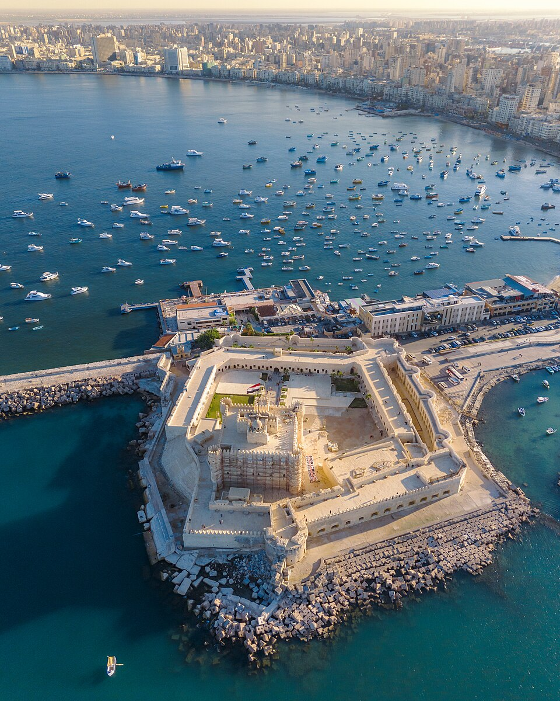
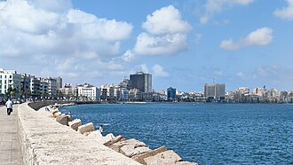
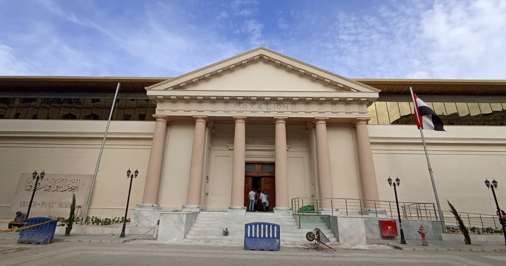
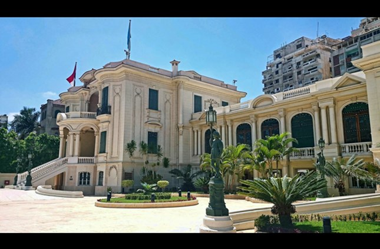
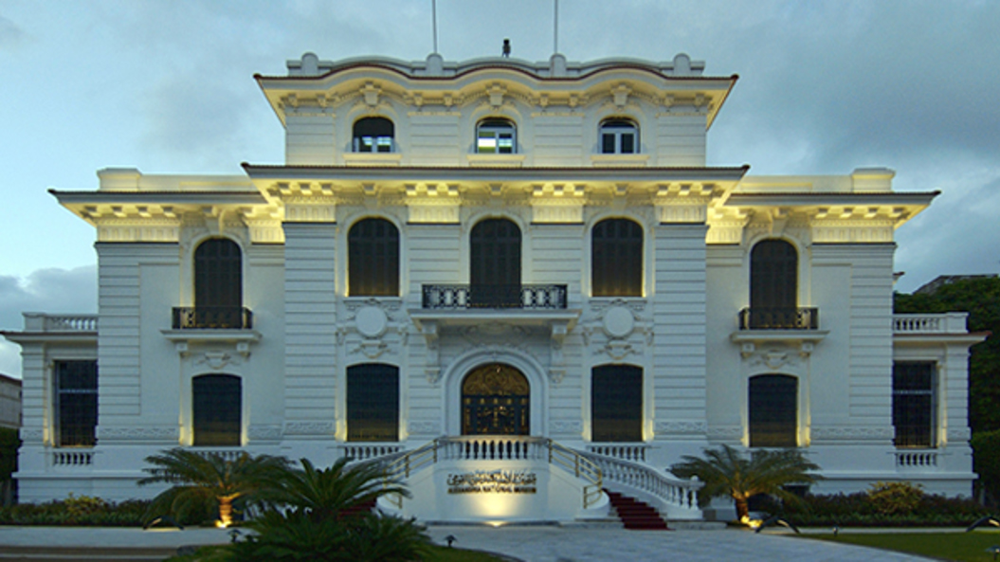
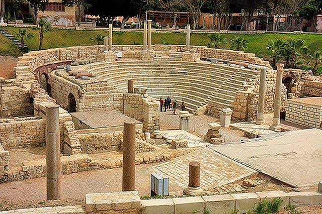
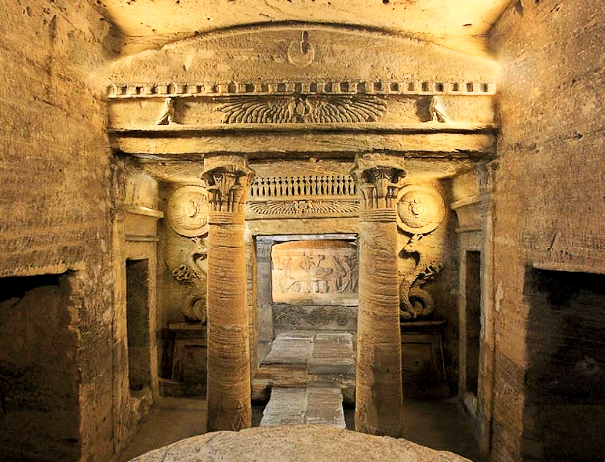
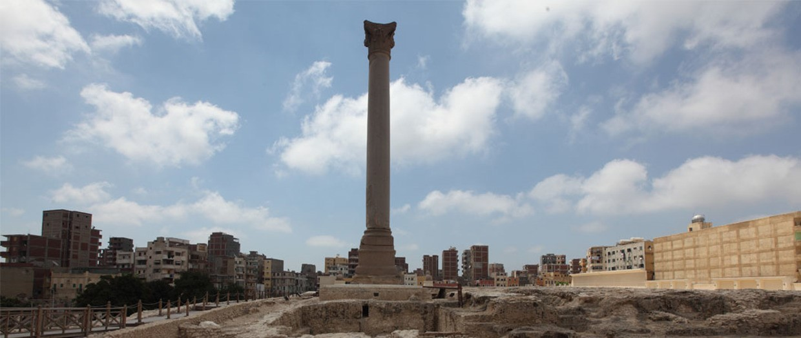
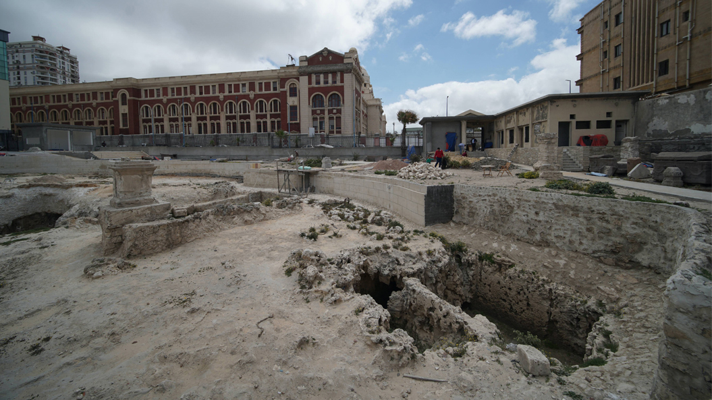
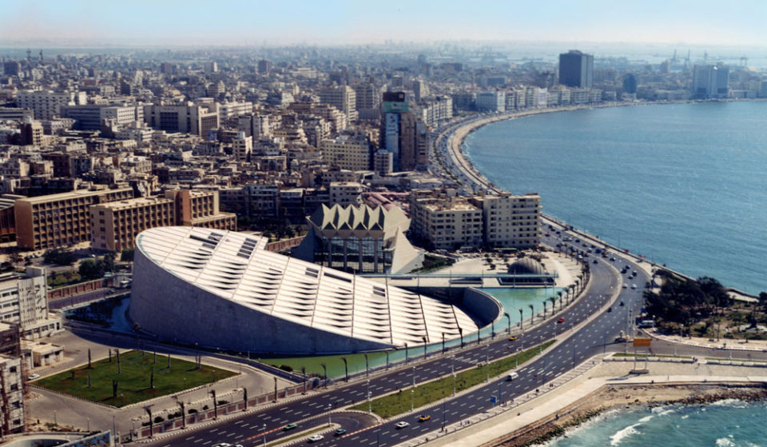

عصر مملوكيقلعة قايتباي
شُيّدت عام 1477م فوق أطلال فنار الإسكندرية القديم وتعد من أعظم الحصون الساحلية بالبحر المتوسط.
ساعتان
التفاصيل الكاملة

دليل رقمي شامل يعيد إحياء تراث الإسكندرية الأثري والمتحفي عبر مختلف العصور لخدمة الزائرين والباحثين وهواة التاريخ.
اضغط على أي مَعلم لمعرفة تاريخه، مواعيد الزيارة، وأسعار التذاكر بالتفصيل.

عصر مملوكيشُيّدت عام 1477م فوق أطلال فنار الإسكندرية القديم وتعد من أعظم الحصون الساحلية بالبحر المتوسط.

يوناني - رومانيأكبر وأعرق متحف متخصص في آثار الحضارتين اليونانية والرومانية، يضم 27 قاعة عرض موضوعية.

الأسرة العلويةقصر زينب فهمي المشيد عام 1919م بزيزينيا، يضم أكثر من 11,500 تحفة ومقتنى ملكي نادراً.

شامل كل العصورأول متحف قومي بمصر، يقع في قصر أسعد باسيلي بشارع فؤاد، ويضم 1800 قطعة عبر 3 طوابق تاريخية.

يوناني - رومانيالمدرج الروماني الوحيد في مصر، يضم مدرجات رخامية وحمامات أثرية وفيلا الطيور ذات الفسيفساء النادرة.

عجائب العصور الوسطىسراديب جنائزية فريدة محفورة بعمق 3 طوابق تحت الأرض تجمع ببراعة بين الطرازين الفرعوني والروماني.

عصر رومانيأعلى نصب تذكاري منفرد من الجرانيت في العالم القديم بارتفاع يتجاوز 26 متراً أقيم للإمبراطور دقلديانوس.

عصر بطلميأقدم مقبرة أثرية باقية بالإسكندرية تعود لأوائل العصر البطلمي، تمثل طراز المنازل الإغريقية القديمة المنحوتة في الصخر.

تراث حضاري وثقافيمنارة إشعاع حضاري عالمية تضم باقة من أثرى المتاحف: متحف الآثار الغارقة والبرية، متحف المخطوطات، وتاريخ العلوم.
اختر أي مَعلم من الأسفل لمعاينة موقعه الجغرافي مباشرة على خريطة جوجل.
يهدف هذا المشروع لتقديم مرجع موثوق وتفاعلي يجمع أهم متاحف ومعالم عروس البحر الأبيض المتوسط الأثرية، مع توفير كل ما يحتاجه السائح والباحث من توثيق تاريخي، إحداثيات جغرافية دقيقة، ومواعيد ورسوم الزيارة المحدثة.